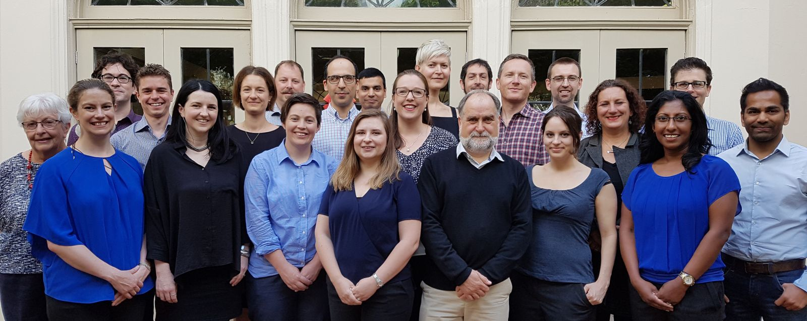

Employment and other brain science opportunities
Please contact the EMCR Network if you would like to advertise positions here.

It is our one year anniversary since the establishment of the Australian Brain Alliance Early- and Mid-Career Researcher Network (ABA EMCR Network)!
We would like to thank all of you for signing up to be a part of this journey and we are so excited about what this year holds for Australian brain EMCRs. To celebrate, we have been busy putting together our strategic plan for 2019-2022, which we have included on the website for you to read.
Our strategic plan will give you some more information about what we plan to do as a group and how we intend to interface with our members and EMCR brain scientists as a whole.
In this newsletter we have included a number of profiles of Australian brain EMCRs kicking goals, as well as awesome initiatives getting up and running — like QueersInscience, set up to foster and champion the inclusion of LGBTQIA+ professionals within STEMM organisations. We hope you enjoy being a part of the BSN, and please check our website and follow us on twitter and linkedin.
If you want to reach out to us with any questions or feedback, or advertise any events relevant to BSN members, please email us.

Our final EMCR showcase and networking forum for 2018 was held at the University of Technology Sydney in October.
We had five excellent talks from EMCRs covering some of the most cutting-edge topics in brain research in both academia and industry in New South Wales. Dr Sylvia Gustin from NeuRA presented on how she is developing virtual reality treatment interventions for patients with spinal cord injuries. Next, Dr Mojtaba Golzan from the University of Technology Sydney framed a convincing argument on how the eye could be a window into the brain to understand neurodegenerative diseases. From the University of Sydney, A/Prof Muireann Irish spoke about how she is using functional MRI to understand mind wandering in individuals with dementia, and Prof Zdenka Kuncic on how neuromorphic nanotechnology is advancing to almost mimic neural circuits, raising the question of whether a synthetic brain could be a possibility in the future. The final presentation was by Dr Donna Palmer from Brain Resource Ltd, a company based in Sydney and San Francisco, on how the company is developing neuroscience-based mobile applications to monitor and train emotion, feeling, cognition and self-control capacities.
The showcase ended with a Q&A and networking opportunity which sparked discussions between attendees and speakers about advances in neuroscience technology, on some of the challenges faced by speakers in establishing their independent research groups, and also the opportunities for working in industry after a PhD.
This week we’re featuring profiles of some EMCR Brain scientists - Dr. Adam Hamlin, Dr. Deborah Apthorp, Dr. Ann-Maree Vallence and Dr. Sarah Stephenson.
Please contact the EMCR Network if you would like to advertise grant opportunities here.
Please contact the EMCR Network if you would like to advertise positions here.